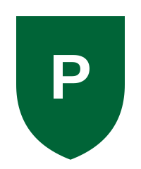

O Palmeiras é um clube de futebol brasileiro fundado em 26 de agosto de 1914, na cidade de São Paulo, por imigrantes italianos. Na fundação, o nome era Palestra Italia, e só em 1942 passou a se chamar Palmeiras.
Conhecido como "Verdão", o clube tem como cores o verde e o branco e joga em casa no Allianz Parque. Ao longo da história, conquistou diversos títulos nacionais e internacionais, o que o torna um dos clubes mais tradicionais do país.
Abaixo está uma ilustração simples nas cores do clube:

Em ordem cronológica, estas foram as conquistas continentais do clube:
| Ano | Acontecimento |
|---|---|
| 1914 | Fundação do clube com o nome de Palestra Italia. |
| 1942 | O clube passa a se chamar Palmeiras. |
| 1999 | Primeira conquista da Copa Libertadores. |
| 2014 | Inauguração do estádio Allianz Parque. |
| 2020 e 2021 | Conquista da Libertadores duas vezes seguidas. |
Para saber mais sobre o clube, acesse os links abaixo: